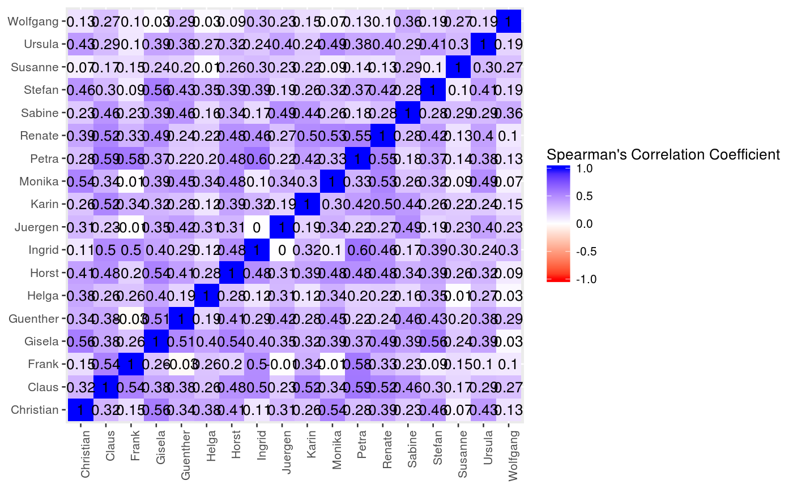

Correlate Q Sorts.
Wraps stats::cor to calculate correlation coefficients.
Construct S3 class for pensieve.
Check S3 class.
Plot S3 class.
correlate(sorts, method = "spearman", use = "pairwise.complete.obs") QCors(cors, validate = TRUE) # S3 method for QCors check(x) # S3 method for QCors plot(x, summarize = NULL, n_obs = NULL, use_js = NULL, ...)
Arguments
| sorts | An integer array with item handles as first dimension, people as second dimension, arbitrary dimensions thereafter, and item positions in cells. Dimensions must be named. |
|---|---|
| method | A character string indicating which correlation coeffocient to use.
Must be |
| use | A character string giving a method for computing covariances in the presence of missing data.
Must be |
| cors | A numerical matrix with correlations. |
| validate | a logical flag, indicating whether the object will be validated on construction. Defaults to `TRUE`. |
| x | class object created by respective constructor function. |
| summarize | A logical flag, indicating whether the object should be summarized before plotting.
If Defaults to |
| n_obs | Integer scalar, giving the number of observations (here: items), on which the correlations are based.
Defaults to |
| use_js | A logical flag, indicating whether an interactive, java-script variant of the plot should be returned. Defaults to `NULL`, in which case the appropriate output is inferred from the runtime environment. |
| ... | Arguments passed onto other methods. Not currently used. |
Methods (by generic)
check: validationplot: plotting
See also
Other analysis functions: extract,
score
Other S3 classes from `pensieve`: QItemConcourse,
QItemStrata, QPeopleFeatures,
QPreSorts, QSorts,
extract, make_grid,
score
Other validation functions: QItemConcourse,
QSorts, check,
extract, make_grid,
score
Other plotting functions: QSorts,
extract,
knit_print.QItemConcourse
Examples
# this just runs the calculations, but also classes and validates the results cors <- correlate(sorts = civicon_2014$qData$sorts[,,"before"]) # this just assigns the class, without validation (not recommended) cors <- QCors(cors = cors, validate = FALSE) # create checkable object x <- QItemConcourse( concourse = matrix( data = c( "Man lives to work.", "Man lebt, um zu arbeiten.", "Man works to live.", "Man arbeitet, um zu leben." ), nrow = 2, ncol = 2, dimnames = list( items = c("live_2_work", "work_2_live"), languages = c("english", "ngerman") # ideally, these are valid babel languages ) ) ) # check object and friends ... check(x) # returns TRUE or error message#> [1] TRUE#> [1] TRUE#> [1] TRUE# makes a heatmap plot(x = cors, use_js = NULL, type = "heatmap", n_obs = NULL)# makes density estimate plot(x = cors, use_js = NULL, type = "density", n_obs = nrow(civicon_2014$qData$sorts[,,"before"]))